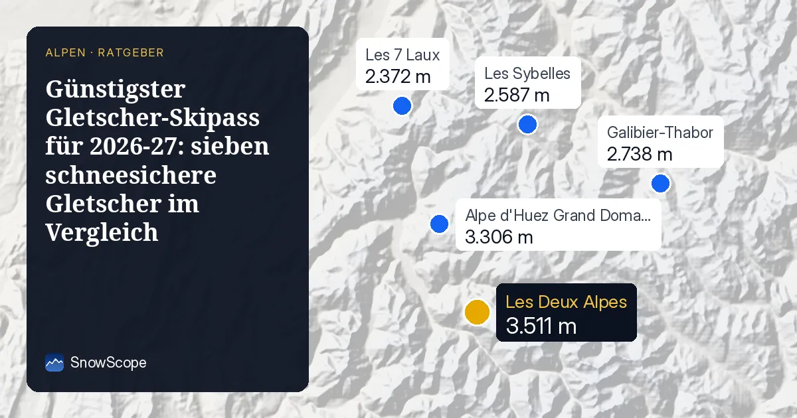

Günstigster Gletscher-Skipass für 2026-27: sieben schneesichere Gletscher im Vergleich
Im November und Anfang Dezember ist ein Gletscher der sicherste Ort, um Geld für einen Skipass auszugeben. Von den sieben verglichenen Gletschern sind Les 2 Alpes und der Mölltaler Gletscher mit 68 und 69 EUR für einen Erwachsenen-Tagespass am günstigsten, und der Mölltaler Gletscher hat zudem im Schnitt den tiefsten Dezember-Schnee der Gruppe: 118 cm auf mittlerer Höhe.
Die Live-Schneeprognose für Les Deux Alpes in der SnowScope-AppSchneehöhen, Pulverschnee-Alarme und 3D-Karte, gratis.
Sieben Gletscher, von 68 EUR bis 86 CHF
Les 2 Alpes verkauft den Tagespass fürs Grand Domaine mit dem flexiblen Freedom-Ticket für 68 EUR, und am Eröffnungswochenende am 28. und 29. November 2026 sogar nur für 42 EUR. Der Mölltaler Gletscher in Kärnten folgt mit 69 EUR in der Nebensaison, wobei dieser Preis aus der letzten veröffentlichten Preisliste stammt, der von 2025-26 – also vor der Reise unbedingt noch mal prüfen.
Die Zugspitze, Deutschlands einziges Gletscher-Skigebiet, kostet online 70,5 EUR. Das Kitzsteinhorn über Kaprun verlangt 74 EUR in der Vorsaison und 82 EUR in der Hauptsaison. Im Pitztal gilt den ganzen Winter ein Preis, 77 EUR, genauso wie in Hintertux mit 82 EUR. Saas-Fee in der Schweiz bildet mit 86 CHF das Schlusslicht der Liste.
Welche Gletscher wirklich Schnee haben
Nicht jedes Gletscher-Skigebiet ist überall hoch gelegen. Wir haben uns die mittlere Höhenlage in unserer Schneehistorie aus 46 vergangenen Wintern angeschaut. Der Mölltaler Gletscher liegt auf 2.593 m, hat im Dezember normalerweise 118 cm Schnee und in 9 von 10 Wintern 23 Wochen mit mindestens 50 cm. Das Pitztal liegt auf 2.576 m, hat 82 cm und 22 solcher Wochen. Saas-Fee kommt auf 68 cm und 21 Wochen, Les 2 Alpes auf 77 cm und 20 Wochen.
Hintertux und die Zugspitze erreichen beide 15 schneesichere Wochen, mit 53 cm beziehungsweise 56 cm in einem durchschnittlichen Dezember. Das Kitzsteinhorn überrascht: Seine mittlere Höhenlage liegt niedriger, bei 1.894 m, mit 41 cm Schnee im Dezember und 11 schneesicheren Wochen. Der Gletscher oben ist verlässlich, die lange Abfahrt hinunter nach Kaprun aber im Frühwinter oft nicht.
Das beste Preis-Leistungs-Verhältnis je nach Trip
Für den niedrigsten Preis bei gleichzeitig meistem Schnee gewinnt der Mölltaler Gletscher in Österreich: 69 EUR und der tiefste Schnee der sieben Gebiete. Es ist ein kleineres Gebiet mit 21 km Pisten, ein bis zwei Tage reichen also. Das Pitztal ist die Wahl für starke Skifahrer, die hoch hinauswollen, mit Liften bis auf 3.424 m und jeden Tag demselben Preis.
In Frankreich ist Les 2 Alpes Ende November kaum zu schlagen: 42 EUR am Eröffnungswochenende, Lifte bis auf 3.511 m und 108 km Pisten, sobald das ganze Gebiet geöffnet ist. Die Zugspitze lohnt sich von München aus für einen einzelnen Tag, und Saas-Fee ist die Wahl, wenn man Schweizer Schnee will und mit dem Franken leben kann.
Gletscherskifahren im Frühwinter: was dich erwartet
Im November öffnen die meisten Gletscher nur ein paar Pisten oben, und meist fährt man mit dem Lift wieder ins Tal. Der Schnee ist morgens oft hart, und die Tage sind kurz – also früh starten. Starker Wind kann die obersten Lifte sperren, und die Kälte auf 3.000 m ist deutlich härter als im Tal.
Außerhalb der markierten Pisten haben Gletscher Gletscherspalten, die unter frischem Schnee versteckt sind. Verlasse die Piste nie ohne Guide und check vor der Fahrt den Lawinenlagebericht der Region.
Den Aufenthalt zusammen mit dem Pass buchen
Ein Wochenende in der Vorsaison wird günstiger, wenn man im Tal übernachtet: Flattach unterhalb des Mölltaler Gletschers, die Pitztal-Dörfer unterhalb des Gletschers oder das Tuxertal. Die Karte in diesem Artikel zeigt Unterkünfte unter 130 EUR pro Nacht in der Nähe der vier Gletscher, die wir empfehlen, fürs Wochenende vom 27. bis 29. November 2026.
Die Preise auf der Karte ändern sich je nach gewähltem Datum, und auch die Liftpreise können sich im Laufe des Winters ändern. Kauf den Pass auf der offiziellen Seite des jeweiligen Gletschers.
Tipps für Skifahrer
- Am günstigsten und schneereichsten: Mölltaler Gletscher, 69 EUR und 118 cm in einem durchschnittlichen Dezember auf 2.593 m.
- Deal zum Saisonstart: Les 2 Alpes für 42 EUR am 28. und 29. November 2026.
- Kitzsteinhorn: top oben, dünn unten im Frühwinter.
- Verlasse auf einem Gletscher nie die markierten Pisten ohne Guide.
Weitere Karten (externe Seiten)
Quellen und Nachweise
- Les 2 Alpes, official ski pass shop, prices 2026-27 www.skipass-2alpes.com/en/pricing
- Les 2 Alpes, official ski pass shop, opening weekend offer www.skipass-2alpes.com/fr/forfaits/ski
- Mölltaler Gletscher: official lift-pass prices (2025-26), checked 13 November 2026 www.moelltaler-gletscher.at/en/price-list/winter/moelltaler-gletscher
- Zugspitze: official lift-pass prices (2026-27), checked 13 November 2026 zugspitze.de/prices
- Kitzsteinhorn (Kaprun): official lift-pass prices (2026-27), checked 13 November 2026 www.kitzsteinhorn.at/en/tickets-prices/ski-board
- Pitztaler Gletscher: official lift-pass prices (2026-27), checked 13 November 2026 www.pitztaler-gletscher.at/media/pt_price_winter_26_27.pdf
- Hintertuxer Gletscher: official lift-pass prices (2026-27), checked 13 November 2026 www.hintertuxergletscher.at/en/tickets-rates/tickets-rates/rates-hintertux-glacier/
- Saas-Fee/Saastal, official ski pass prices 2026-27 www.saas-fee.ch/en/winter-in-the-saas-valley/ski-pass-prices/saas-fee
Zu diesen Zahlen
Schneewerte: SnowScope-Schneehistorie, 46 vergangene Winter (1980-81 bis 2025-26) auf drei Höhen des Skigebiets, ein höhenkorrigiertes Modell der Vergangenheit (eine Schätzung für eine Fläche, keine Meldungen des Skigebiets). Lifte, Pisten und Anreise: die Quellen unten, geprüft am angegebenen Datum.
Diesen Bericht zitieren
Für Forschung, Lehre oder Presse: Zahlen und Grafiken sind unter CC BY 4.0 mit dieser Quellenangabe frei nutzbar.
SnowScope (2026), Günstigster Gletscher-Skipass für 2026-27: sieben schneesichere Gletscher im Vergleich, https://snowscope.app/blog/de/2026/11/cheapest-glacier-ski-pass-2026-27-snow-sure.html, abgerufen am 2026-11-19
SnowScope (Atlas Labs). (2026, November 19). Günstigster Gletscher-Skipass für 2026-27: sieben schneesichere Gletscher im Vergleich. SnowScope snow reports. https://snowscope.app/blog/de/2026/11/cheapest-glacier-ski-pass-2026-27-snow-sure.html
BibTeX
@misc{snowscope2026cheapestglacierskipass20,
author = {{SnowScope (Atlas Labs)}},
title = {Günstigster Gletscher-Skipass für 2026-27: sieben schneesichere Gletscher im Vergleich},
year = {2026},
month = nov,
howpublished = {\url{https://snowscope.app/blog/de/2026/11/cheapest-glacier-ski-pass-2026-27-snow-sure.html}},
note = {Published 2026-11-19 14:07 UTC; accessed 2026-11-19}
}· CC BY 4.0 · Methoden, Daten und Werkzeuge →
Les Deux Alpes: Schnee und Temperatur nach Höhe, dieser Winter vs letzter (Werkzeuge) →
Les Deux Alpes folgen
Gratis: eine Nachricht, wenn Neuschnee kommt, und jeden Morgen die Vorhersage.
Weitere Schneeberichte

Von 20 EUR am Eröffnungswochenende bis zu 6-Tages-Pässen vor Weihnachten: ein Kalender der günstigsten Saisonstart-Angebote in den Alpen für 2026, mit dem Schnee, den du dabei erwarten kannst.

Wir bewerten französische Skigebiete nach der Schneewahrscheinlichkeit im Dezember und den Skipasspreisen, beginnend bei 36,00 EUR für einen Tagespass für Erwachsene in Les Karellis.